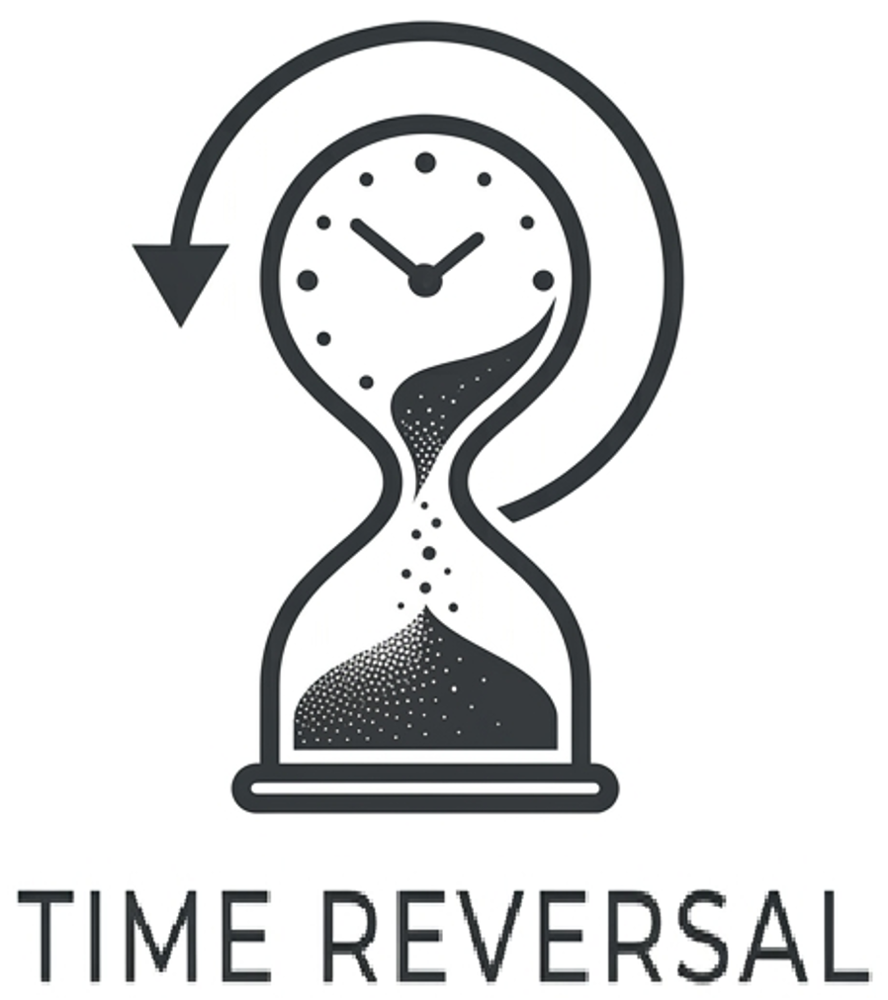

Simulating Magnetic Skyrmions Dynamics
Exploring the lifetime and dynamics of topological textures in thin films using micromagnetic modeling and C++.
Read Full Article →
An Educational Science Platform interested in state-of-the-art Physics and Chemistry
Welcome to The Time Reversal. This platform is dedicated to the idea that the most profound physical phenomena are often written in the language of abstract mathematics.
As a researcher in semiconductor physics and micromagnetics, my approach is driven by a fascination with how abstract structures—such as differential geometry, algebraic topology, and algebraic geometry—provide the scaffolding for physical reality. Whether it is the topological stability of magnetic skyrmions or the fiber bundles of gauge theories, I believe that understanding the math is the key to mastering the physics.
Here, you will find a collection of research notes, interactive simulators, and deep dives that bridge the gap between rigorous mathematics and state-of-the-art physics and chemistry. This is a space for those who aren't afraid to dive into the equations to see the beauty of the universe.
Explore the interactive tools on the left to see these mathematical principles in action.
Exploring the lifetime and dynamics of topological textures in thin films using micromagnetic modeling and C++.
Read Full Article →